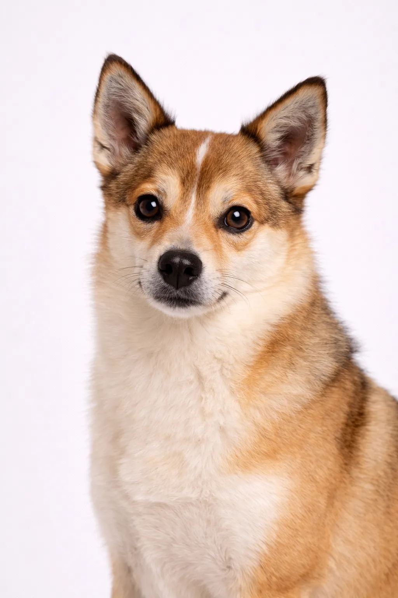

Lundehund
Actif, alerte, énergique, et toujours prêt pour l'aventure — le compagnon sportif idéal.
13-15 in
13-15 lbs
Évaluations de la Race
Tempérament
Aperçu
Le Lundehund est un Chien Non-Sportif de taille petit au tempérament alerte, énergique, loyal. Originaire de Norvège, cette race est très populaire auprès des amateurs de chiens.
Tempérament
Le Lundehund est alerte et énergique. Cette race est connue pour son caractère équilibré et forme des liens forts avec sa famille. Avec une socialisation et un dressage appropriés, ils deviennent des compagnons loyaux et affectueux.
Santé
Le Lundehund a une espérance de vie de 12-14 ans. Comme beaucoup de races de cette taille, ils peuvent être sujets à luxation de la rotule, problèmes dentaires et maladies oculaires. Des visites vétérinaires régulières et une alimentation équilibrée sont importantes pour une vie longue et saine.
Exercice
Le Lundehund est une race très énergique qui nécessite au moins 60-90 minutes d'exercice quotidien. Les longues promenades, la course et les jeux actifs sont idéaux. Sans suffisamment d'exercice physique et mental, des problèmes de comportement peuvent survenir.
⦿ Cette Race Est-Elle Faite Pour Vous ?
✓ Idéal Pour
- Propriétaires expérimentés
- Those interested in rare breeds
- Patient trainers
✗ Pas Idéal Pour
- Premiers propriétaires
- Those wanting easy trainability
Notre Verdict : Le Lundehund convient mieux aux propriétaires expérimentés. Cette race alerte et énergique nécessite un dressage cohérent et une direction ferme.